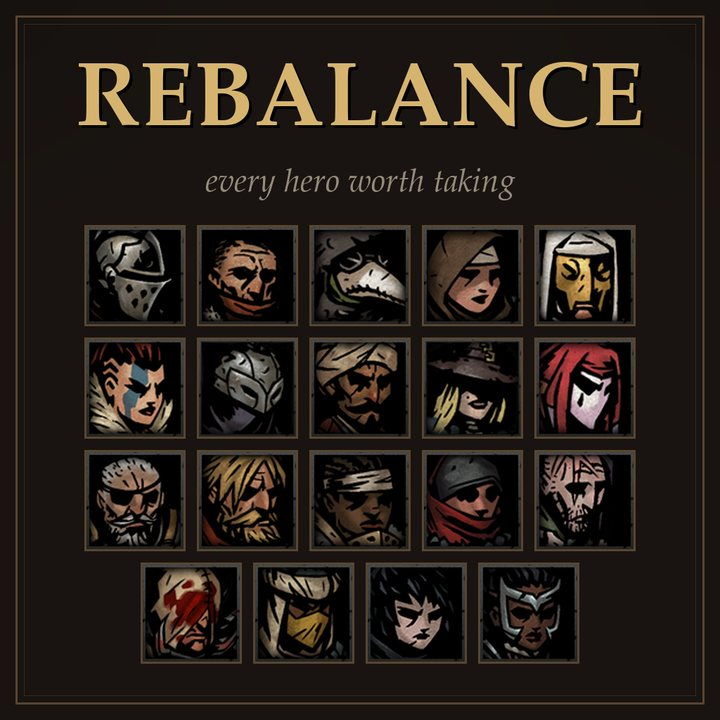
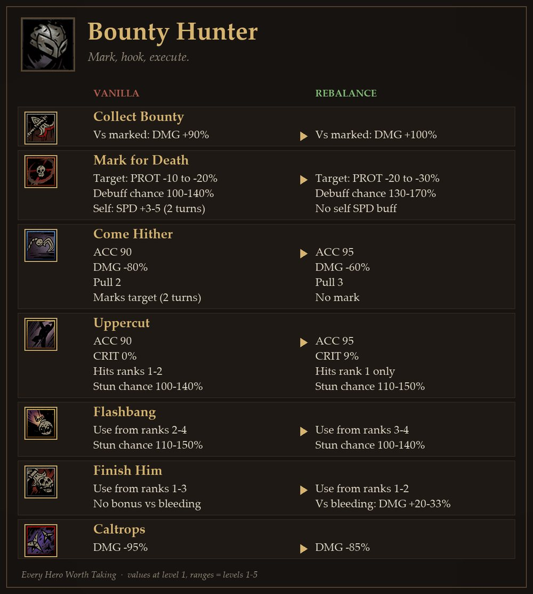
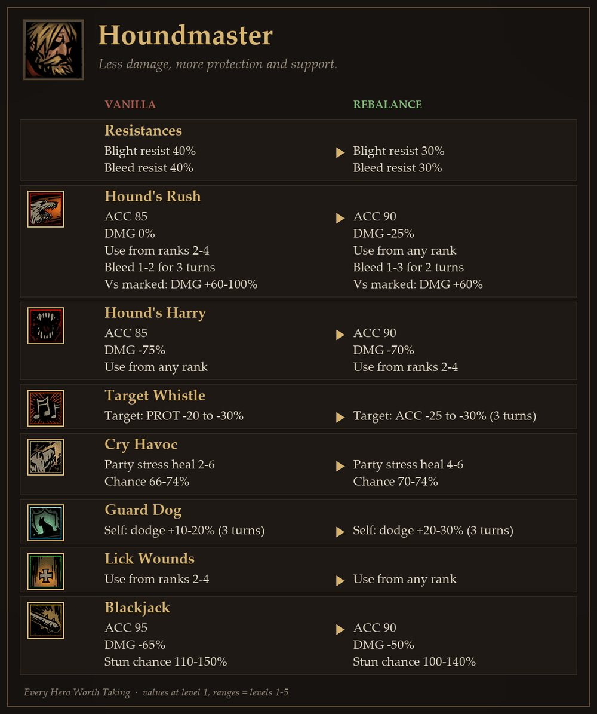
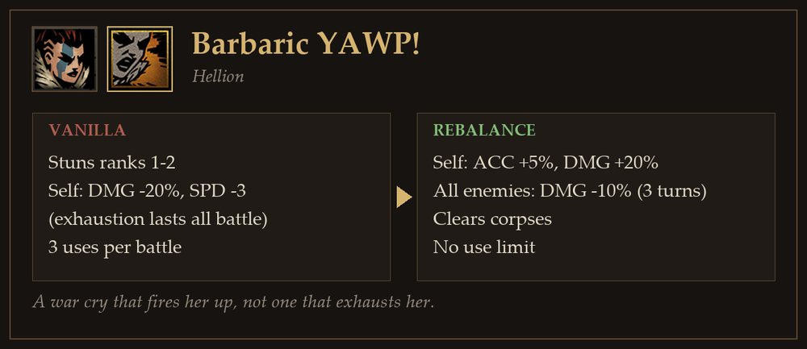
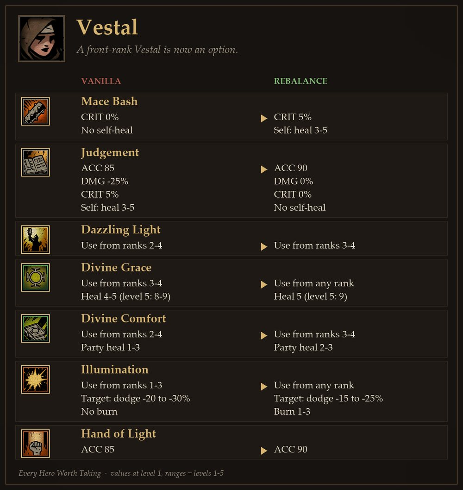

"이 영웅이 없으면 못 깬다"는 조합을 없애기 위해 19명의 영웅을 하나의 수치 규칙으로 다시 맞췄습니다. 목표를 정하고, 원작 데이터를 전수 조사해 규칙을 뽑고, 모든 효과를 같은 단위로 환산해 조정하고, 스팀 창작마당에 10개 언어로 공개했습니다.

다키스트 던전은 원정을 수십 번 반복하는 게임이라 체력과 스트레스 관리가 전부입니다. 그런데 회복과 스트레스 회복이 성녀·신비학자·광대 몇 명에게 몰려 있어서, 초반에는 이들이 없으면 사실상 진행이 막힙니다. 파티는 늘 비슷해지고 나머지 영웅은 여관에 남습니다.
영웅 하나 안에서도 같은 일이 벌어집니다. 기술 7개 중 최적의 4개를 들고, 가장 좋은 열에 세워 같은 버튼만 누르는 플레이가 정답이 됩니다.
목표는 그래서 하나로 정했습니다. 던전·적·파티 구성에 따라 여러 조합이 정답이 될 수 있게 한다(G-00). 나머지 목표는 모두 이걸 위한 수단입니다: 모든 영웅과 기술에 쓸 상황을 만들고(G-01·02), 주 열 밖에서도 쓸 선택지를 주고(G-03), DLC 이상치를 원작 규칙으로 되돌리고(G-04), 회복을 여러 영웅에게 나눕니다(G-05).
모든 변경은 아래 원칙 중 하나 이상에 근거합니다. 원칙은 처음부터 정해 둔 게 아니라, 조정하다 판단이 갈릴 때마다 기준을 글로 박아 넣으며 늘어났습니다.
도굴꾼 극약처방에 자기 회복 1~5를 넣고 전투당 1회 제한을 풀었습니다. 중보병 고양은 매 턴 쓸 수 있는 파티 스트레스 회복이 됐습니다.
노상강도의 반격을 앞으로 나가야 쓰는 결투가의 진격에서 추적탄으로 옮겨, 원거리 노상강도도 반격을 쓰게 했습니다.
방패 파괴자는 무기 강화 때 속도가 원작 어떤 영웅보다 빨리 올랐습니다(5/6/8/8/9). 원작 공식대로 5/5/6/6/7로 맞췄습니다.
포도탄 발사는 명중 75 → 90을 받는 대신 피해 −50% → −60%를 냈습니다. 기술의 본업인 약화 걸기를 확실하게 만든 교환입니다.
붕대를 감았으면 피가 멈춰야 합니다. 석궁사수 야전 붕대질은 출혈 치료를, 유물수집상 섬광 가루는 화상을 갖게 됐습니다.
조련사 설정에는 출혈·중독에 강할 근거가 없어, 두 저항을 기준값 40 → 30으로 내렸습니다.
영거리 사격의 위력은 그대로 두고, 쏜 뒤 2칸 물러나게 해 매 턴 쓰지 못하게 했습니다. 너프 대신 빈도를 조정한 예입니다.
정맥 절개의 약화 두 개는 장신구가 강화하는 효과라 남기고, 대신 피해를 낮췄습니다.
"명중 +5를 줬으면 피해를 얼마나 깎아야 하나?", "기절과 스트레스 회복 중 어느 쪽이 더 비싼가?" 같은 질문에 답하려면 서로 다른 효과를 같은 저울에 올려야 합니다. 그래서 모든 기술의 가치를 "피해 보정 X%짜리 평타 한 번"으로 환산했습니다. 데이터 파일에서 직접 고치는 숫자가 피해 보정이라, 분석 결과가 곧 조정값이 됩니다.
환산 계수는 모두 하나의 전투 모델에서 나옵니다. 적 1명을 빨리 지워 4 대 3을 만들고, 기절로 그 우위를 늘리는 쪽이 이깁니다. 영웅 등급 일반 몬스터 64종으로 계산하면 파티는 라운드당 1.57명을 처치하고, 전투는 평균 2.55라운드, 적 1명의 라운드당 사망 확률은 39.3%입니다.
| 효과 | 환산 | 근거 |
|---|---|---|
| 명중 +5 | 피해 10%p | 빗나가면 턴 하나가 통째로 사라짐. 아래 결정 ① |
| 원거리 사거리 | −18%p | 원작 공격 기술 131개 회귀 계수 −17.7 |
| 스트레스 1 | HP 1.67 | 원작 가격 비율 1.22 + 붕괴(고통·미덕) 판정 0.44. 아래 결정 ② |
| 기절 | 성공률 × 10.38 HP | 적 1행동의 위협도(체력 피해 + 스트레스 × 1.67) |
| 치명타 1회 | +131%p 부수 효과 | 추가 피해 외에 스트레스 회복·직업 치명 버프까지 셈 |
| 지속 피해 | 단일 ×0.90 · 광역 ×0.40 | 틱마다 적 생존율 0.608 → 3틱 합 1.20 ÷ 3 |
| 대상 열 | 1열 0.83 · 4열 1.15 | 편성 321개 실측: 3·4열 적이 스트레스를 2.3배 줌 |
| 적 방어 감소 | 적 방어 0에서 멈춤 | 영웅 등급 적의 56%가 방어 0 |
| 아군 회피 | 유효 체력 = 체력 ÷ 적중률 | 회피가 높을수록 1점의 가치가 커짐(최대 약 2.5배) |
후보는 세 개였습니다. 원작이 실제로 매긴 값은 2.2%p(회귀), 기댓값 계산은 7.0%p(적중률 85 → 90이면 기술 전체 ×1.059)입니다. 최종으로 10%p를 골랐습니다. 빗나가면 효과가 비례해서 줄어드는 게 아니라 행동 하나가 통째로 날아가고, 전투 하나가 16행동 남짓이라 그 손실이 기댓값보다 크기 때문입니다. 원작 가격은 명중을 싸게 매긴 것으로 판단했습니다.
원 개발사가 매긴 가격으로 두 자원을 같은 금화에 놓았습니다. 스트레스 회복은 점당 22.7금화, 체력 회복은 18.5금화라 비율 1.22. 여기에 스트레스 100에서 붕괴했을 때의 비용(고통 7종·미덕 5종을 효과별로 계산)을 더했습니다. "붕괴 한 번 뜨면 원정이 무너진다"는 플레이 경험을 숫자로 옮긴 값입니다.
판단은 세 층으로 나눠 했습니다. 설계가(원작 회귀로 본 정가에서 벗어났나), 실전가(확률·저항·행동 경제를 다 곱하면 실제로 얼마인가), 맥락(조합·열·장신구에서 어떻게 쓰이나, 숫자로 뭉개지 않음). 그리고 판정의 기본은 늘 같은 계열 기술을 전부 모아 놓고 비교하는 전수 조사였습니다. 예를 들어 기절 기술을 전부 모아 "1·2열 기절은 명중 90·피해 −50%·일반 기절"이라는 기준선을 세우고, 다른 기절은 그 기준에서 무엇을 맞바꿨는지로 판정했습니다.

문제. 원작에서는 2열에 세워 두고 같은 기술만 반복하는 게 최선이었고, 그를 중심으로 짜는 표식 파티도 생각보다 약했습니다. 모델 점수 44(20명 중 14위).
방향. 반격도 방어 기술도 없는 영웅이니, 약해진 적을 확실하게 끝내는 처형자로 정했습니다. 표식·기절·출혈이 걸린 적이 먹잇감입니다.
대가. 어퍼컷은 1열만 치고, 섬광탄은 3~4열로 옮겼고, 끝장내기는 1~2열에서만 씁니다. 연계가 생긴 만큼 서는 자리를 고민하게 만들었습니다.
결과. 모델 점수 44 → 56. 2열 고정이 아니라 열을 오가는 운용이 정답이 됐습니다.

목표물 지정은 방어를 깎는 표식이었는데, 영웅 등급 적의 56%가 방어 0이라 절반 이상의 전투에서 효과가 없었습니다. 적 명중을 깎는 방어형 표식으로 바꾸고, "딜은 줄이고 지키는 쪽으로"라는 영웅 방향(P-24)을 세웠습니다.

전투 내내 풀리지 않는 탈진은 "끈질긴 야만인"이라는 설정과 맞지 않았습니다. 함성을 자신을 북돋우고 적 전체를 움츠러들게 하는 기술로 바꿨습니다. 기절은 빼서 대가를 냈습니다.

광휘는 "성스러운 빛이 태운다"에 맞게 화상을 주되, 나머지는 바닐라로 되돌리고 회피 감소만 5 낮췄습니다. 화상의 대가이자 석궁사수 표식과 겹치지 않게 하는 구분입니다.
영웅 모드는 보통 한 명씩 손보다 결국 다 세지는 쪽으로 흐릅니다. 이 작업은 19명을 같은 규칙으로 한꺼번에 맞췄기 때문에, 총량이 유지되는지 직접 재 볼 수 있었습니다. 강함 모델을 창작마당 빌드에 그대로 돌렸습니다.
| 바닐라 | 공개판 | |
|---|---|---|
| 20명 총점 합 | 981 | 976 (−0.5%) |
| 표준편차 | 14.1 | 12.2 |
| 최강 − 최약 | 59 | 55 |
내려온 영웅: 결투가 67 → 52, 조련사 60 → 53, 노상강도 56 → 50. 올라온 영웅: 현상금 사냥꾼 44 → 56, 석궁사수 35 → 42, 성녀 35 → 41.
| 기술 (1레벨) | 바닐라 | 공개판 |
|---|---|---|
| 석궁사수 결집 신호탄 | 스트레스 1, 60% | 2, 확정 |
| 조련사 위험 경보 | 스트레스 2, 66% | 4, 70% |
| 중보병 고양 | 회복 없음, 전투당 1회 | 파티 1~3, 무제한 |
| 도굴꾼 극약처방 | 자기 회복 없음 | 자기 회복 1~5 |
| 야만인 아드레날린 분출 | 자기 회복 1~4 | 3~7 |
회복을 가진 영웅 수 자체는 크게 늘지 않았습니다. 바뀐 것은 확률·횟수·양입니다. 광대·성녀가 없어도 버틸 수단이 실제로 쓸 만해졌습니다.
총점은 영웅 개별 강함의 추정이지 실제 난이도 측정이 아닙니다. 이 작업의 최종 목표인 "필수 조합이 사라지는 효과"는 총점에 잡히지 않습니다. 명중 10%p처럼 판단으로 정한 값이 있고, 피해 공식이 곱셈이라는 가정은 게임에서 아직 검증하지 못했습니다. 그래서 숫자는 "0.5% 이내"처럼 추정치로만 공개했습니다.
모델과 원칙은 처음부터 맞지 않았습니다. 실제 플레이 감각과 어긋날 때마다 원인을 찾아 규칙으로 남겼고, 이 기록이 196개 변경 기록과 66개 수치 규칙이 됐습니다.
결투가가 18위로 나온다. 실제론 최강급이다.
한 턴을 쓰지 않는 무료 행동(반격 준비)을 따로 세고, 회피를 직선이 아니라 유효 체력으로 계산. 결투가 18위 → 12위 → 최종 모델에서 바닐라 2위.
치명타를 왜 조정 수단으로 안 쓰나?
포도탄 한 사례를 "치명은 건드리지 않는다"로 일반화한 오류. 원칙을 "치명 보정도 조정 축, 연계로 설계된 값만 보존"으로 정정.
밀치기·당기기 가치가 이상하다.
움직인 대상만 세던 계산을 대열 전체 재배치로 바꿈. 밀치기도 후열을 앞으로 데려오는 이득이 있음을 확인.
방어를 깎는 표식이 과대평가됐다.
게임에서 방어가 음수가 안 됨을 확인하고 0 바닥을 넣음. 조련사 휘파람 +13.5 → −42.6%p, 방향 전환의 근거가 됨.
손으로 고른 목록으로 판단하지 말 것.
기술 조사는 무조건 전 영웅·전 레벨·전 몬스터 수치 전수 조사로. 조사 스크립트(기절·3·4열 도달·광역)로 자동화.
개인 취향이 들어간 커스텀판은 그대로 두고, 원칙과 근거가 확인된 변경만 골라 공개판을 따로 빌드했습니다. 공개 전 전체 변경을 원칙 기준으로 감사해, 근거가 없거나 원칙과 어긋나는 항목은 제외하거나 바닐라로 되돌렸습니다. 다른 제작자의 작업을 바탕으로 한 총사는 공개판에서 뺐습니다.
빌드 도구가 바닐라와 차이를 자동으로 비교해 패치 노트의 "무엇"을 만들고, 근거 문서에서 "왜"를 붙입니다. 영웅별 전후 비교 이미지 19장도 게임 원본 아이콘·초상화로 자동 생성했습니다.
스팀 리뷰 언어 분포를 플레이어 언어의 대리 지표로 썼습니다. 비율 1% 이상인 10개 언어(플레이어 약 93%)를 번역 대상으로 정하고, 기술·영웅 이름은 게임의 공식 번역을 그대로 썼습니다.
| 영어 | 39.5% | 중국어 간체 | 22.5% |
| 러시아어 | 9.2% | 한국어 | 5.6% |
| 스페인어 | 5.2% | 포르투갈어(BR) | 3.9% |
| 프랑스어 | 2.6% | 폴란드어 | 2.4% |
| 독일어 | 1.4% | 중국어 번체 | 1.3% |
러시아어 등록이 조용히 실패해 원인을 찾았습니다. 스팀 설명문 한도 8000은 글자가 아니라 UTF-8 바이트였고, 키릴 문자는 2바이트라 같은 내용이 12KB였습니다. 내용을 지키며 압축하고, 빌드 검사를 바이트 기준으로 바꿨습니다.
모든 수치 결정은 제가 했고, 데이터 수집·계산·문서화·자동화는 AI(Claude)와 협업했습니다. 제가 방향과 원칙을 정하면 AI가 전수 조사와 계산으로 근거를 만들고, 결과가 플레이 감각과 다르면 어느 쪽이 틀렸는지 따져 규칙을 고치는 방식입니다.